Selecting data in the Graph To select data in the graph you can: Manually select and deselect visible nodes and edges using mouse and keyboard controls, and invert selections using Inverse. Select data of specific types in one or a few clicks using: Legend lists of data by category, property, tag, or relationship. You can select all nodes of one or more categories or tags, edges of one or more relationships, or nodes or edges that include one or more listed values of a property. Right-click Select menu items to select and deselect all nodes, select nodes or edges connected in a variety of specific ways, and to add or subtract a node or edge from a current selection. Right-click Find Path menu item to find and select the connected nodes and edges between any two selected nodes. Toolbar Trace Neighbor and Select Visible icons. Searchable Tables of data by category and relationship in the Table panel that let you select nodes or edges (and navigate to them). Filter options to filter and select data by numerical, date, or categorical property value. Select data with mouse and keyboard controls Standard mouse and/or keyboard Selection Shortcuts enable manual selection of visible data in the graph. You can select one or more nodes and/or edges and add to or subtract from your selection. Use left mouse click drag to manually move a selection to another part of the space. You can also use the Pin/Release (Ctrl+P) toolbar icon or right-click menu item to pin (or release) selected nodes to a specific location in the project space. Inverting a selection Once you have a selection, click Inverse on the toolbar or the right-click Select menu to deselect currently selected nodes and edges, and select all the other visible data. The badge on the toolbar icon shows the number of currently selected nodes. Inverse is often used along with Hide /Unhide Selection to simplify a graph by temporarily removing and then restoring some of its data. Select using the Legend lists The Legend displays lists of data currently visible in the graph by category, relationship, property value, or tag. List items appear in bubbles that include the label, the total number of nodes or edges of that type, and the number currently selected. The list is displayed in descending order of the amount of data: items with the most nodes (or edges) appear at the top of a list. Click a list item to select: all the nodes of a category or tag 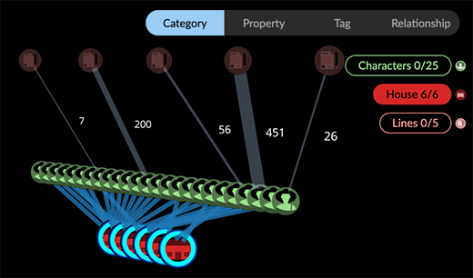 all the edges of a relationship 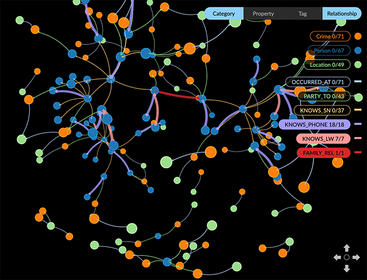 all the nodes (or edges) with a specific property value 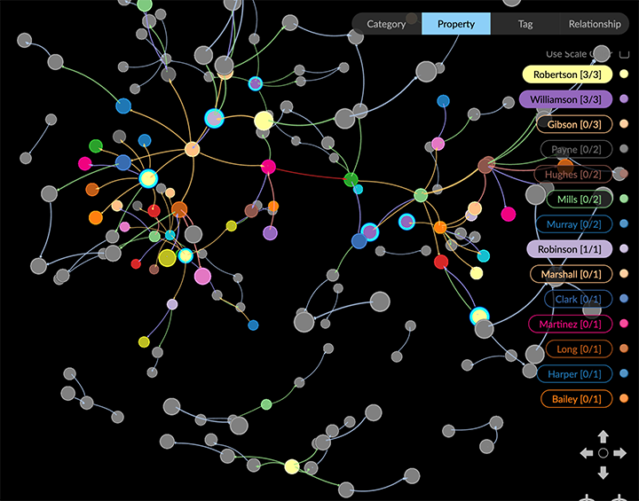 Use Ctrl+ left click to select more than one list item. Select using the right-click Select menu The right-click Select menu lets you select or deselect all the visible data, unconnected data, and data that’s connected in particular ways. These features make it easy to select and isolate subgraphs quickly. You can: Select any of the following in one click: All Nodes or Deselect all nodes. Floating Nodes. All nodes with no connected edges. Leaf Nodes. All nodes connected through only one edge. Neighbor Nodes. Nodes connected one edge away from selected nodes. Choose again to select the nodes another hop away from the selected node. Parent Nodes. Source nodes connected through a directed edge to selected nodes. Child Nodes. Target nodes connected through a directed edge to selected nodes. Neighbor Edges. The edges connected to selected nodes. Connected Nodes. The nodes connected to selected edges. 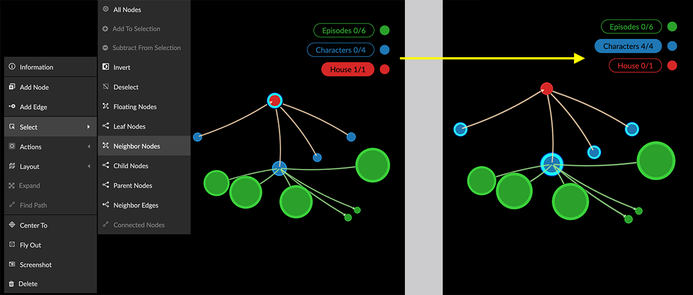 Select and Add to a current selection by holding down the Ctrl or Alt key before choosing a Select menu item. This lets you create a selection that combines data connected in a variety of ways. 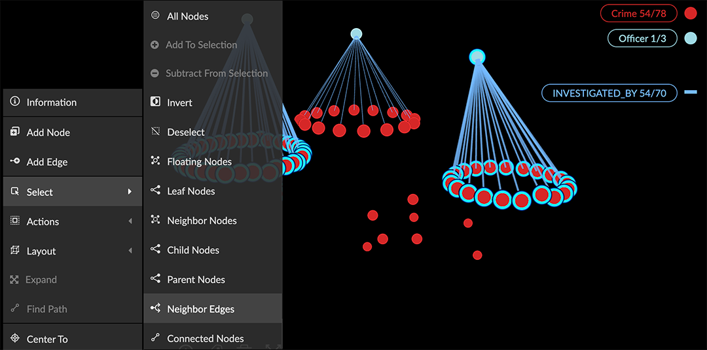 Add or subtract a single node. Right-click on a single unselected node and choose Select > Add to Selection. Right-click on a single selected node and choose Select > Subtract from Selection. 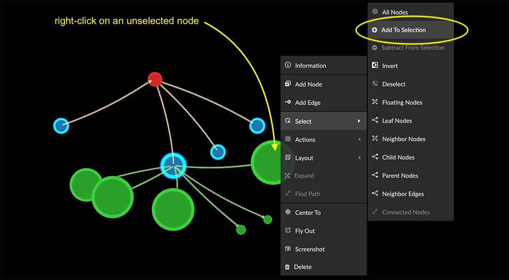 Find a path between two nodes Find Path on the right-click menu selects the nodes and edges on a path between two nodes that you select. You can then use Tag to save the path. To find paths between more than one start and end node you can use Path Finding in the Algorithm panel. To find a path between two nodes: Click to select a node, then Ctrl-click to select the second node. Right-click and choose Find Path from the menu. The nodes and edges on the path are selected. In the example, a path consisting of 11 nodes connected through ten edges has been found and selected. A message displays if no path is found. To save the path, Tag the selection. Click Tag on the toolbar, or select Actions > Tag from the right-click menu. In the Manager Tags dialog, enter a descriptive name(e.g. Path1) and click Add Tag. 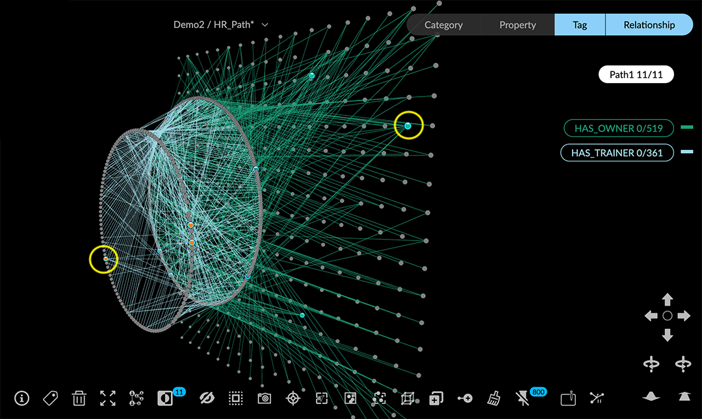 To isolate a tagged path, click Tag in the legend, click the tag item to select it, use Inverse, and hide (or delete) the data not on the path. Optionally, save a view or snapshot of the isolated path. 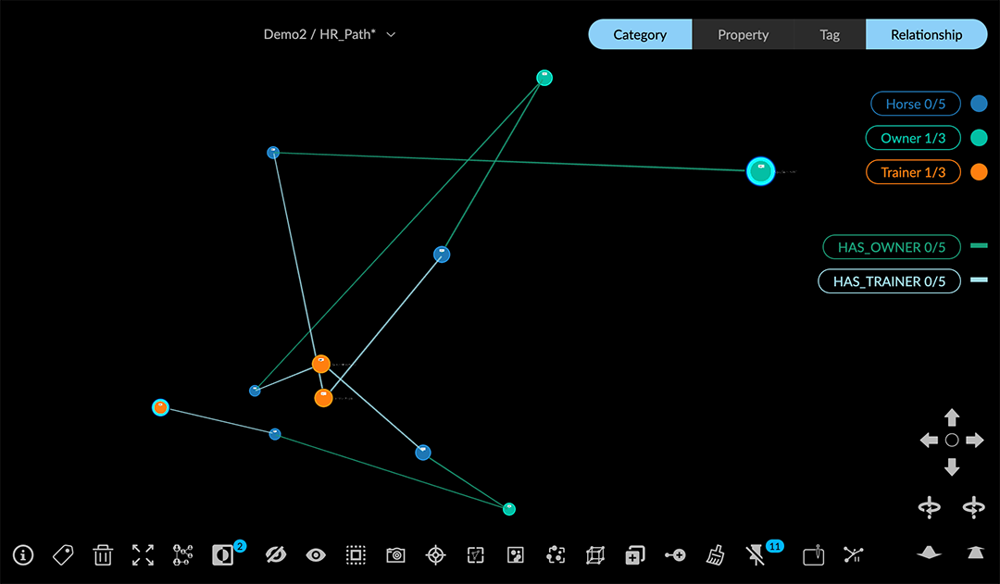 Select a subgraph with Trace Neighbor and Select Visible Nodes The Trace Neighbor tool enables you to highlight subgraphs in the data. You start from selected source nodes and highlight additional connected nodes a specific number of hops (i.e. edges) away. You can select one or more source nodes in the graph space, or use the lists in the legend to select nodes of one or more categories, or nodes with particular property values. With the Select Visible Nodes tool you can select a highlighted subgraph for further investigation and use the Inverse and Hide Selection or Delete tools to temporarily hide or delete data not in the subgraph. When Trace Neighbor is not invoked, Select Visible Nodes selects all nodes in the graph, similar to the shortcut Ctrl+A or the right-click Select > All Nodes menu item. To isolate a subgraph using Trace Neighbor: Select one or more nodes in the graph. In this example, in the Property list in the Legend we select nodes with specific surname property values attached to Person nodes. 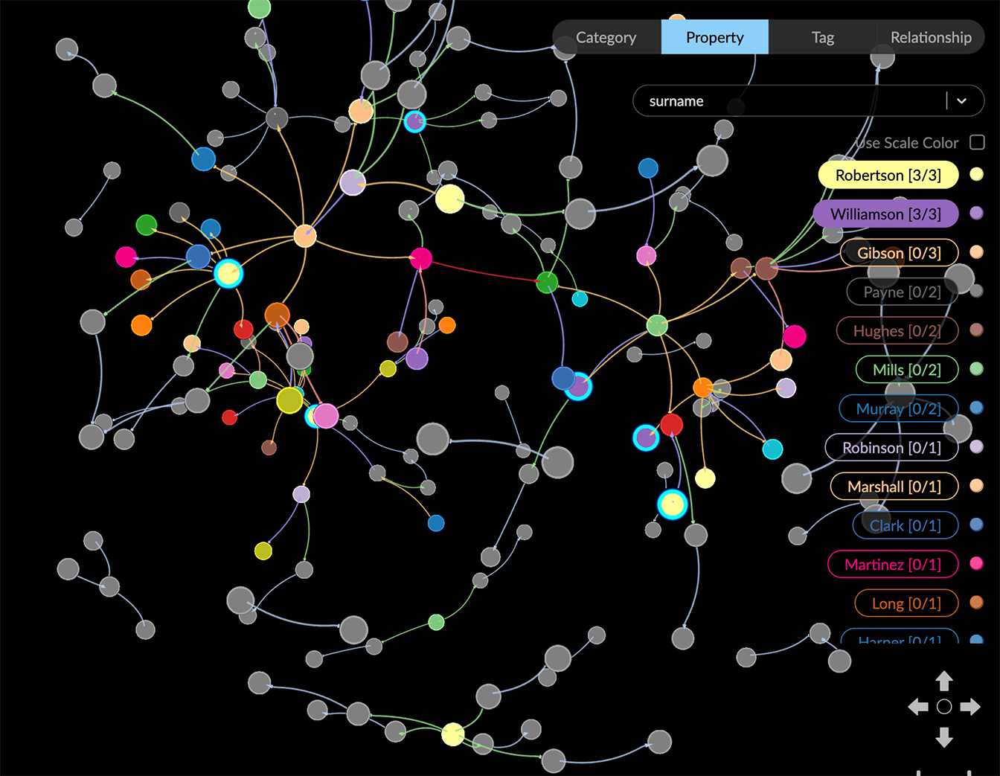 Click the Trace Neighbor tool. A slider displays showing the number of connections or hops from the selected nodes that exist in the graph. All the rest of the data is now dimmed (that is, not visible). 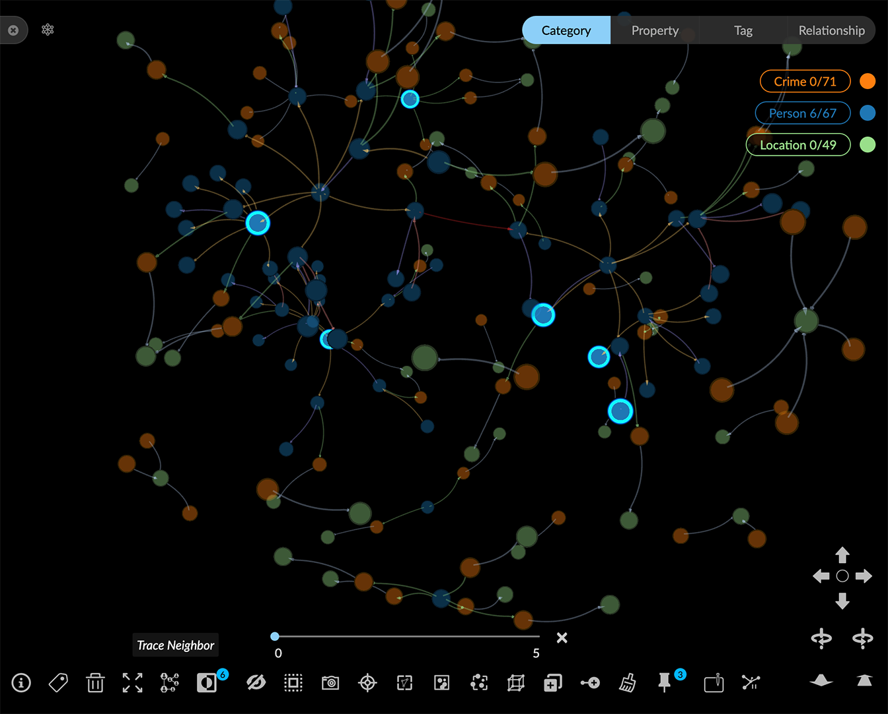 Use the slider to highlight the nodes and edges that number of hops away from the source nodes. 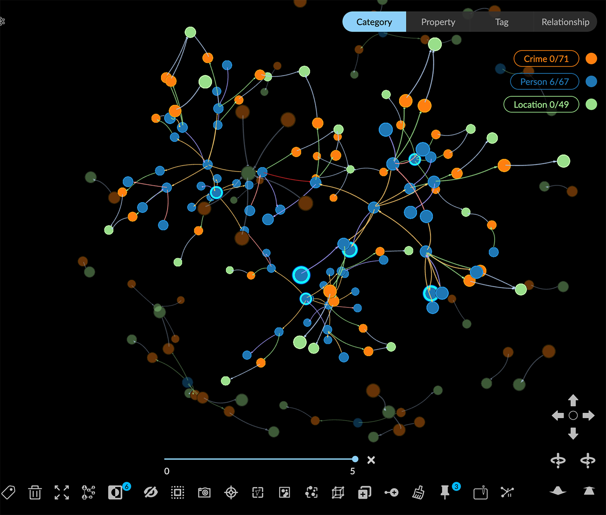 Click the Select Visible Nodes toolbar icon to select the highlighted nodes. 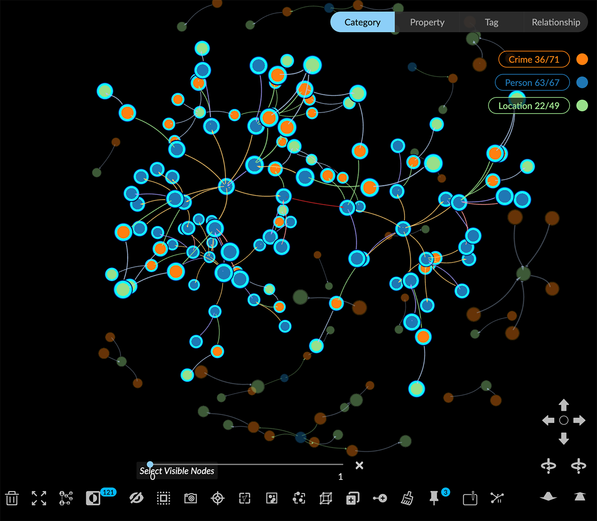 Now save a Snapshot so you can revert if needed. Isolate the selected subgraph for further exploration. Click Inverse to select all the nodes that aren’t in the subgraph. 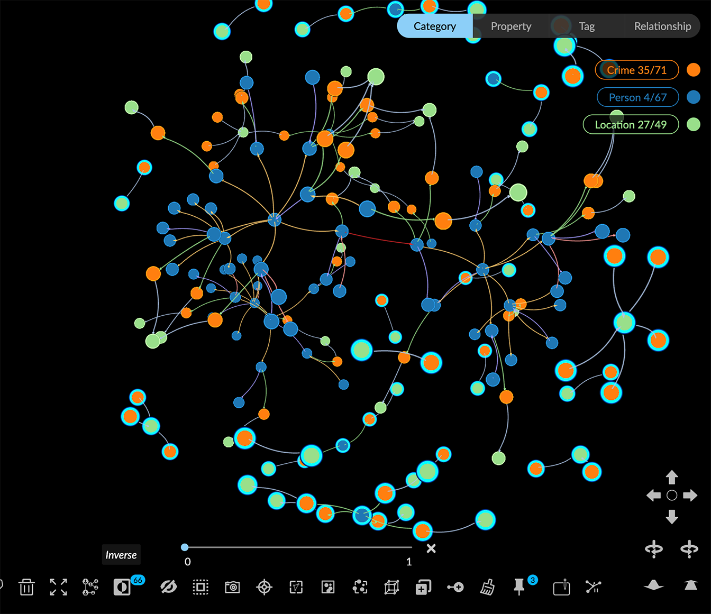 Click the Hide, or Delete tools to remove those nodes. 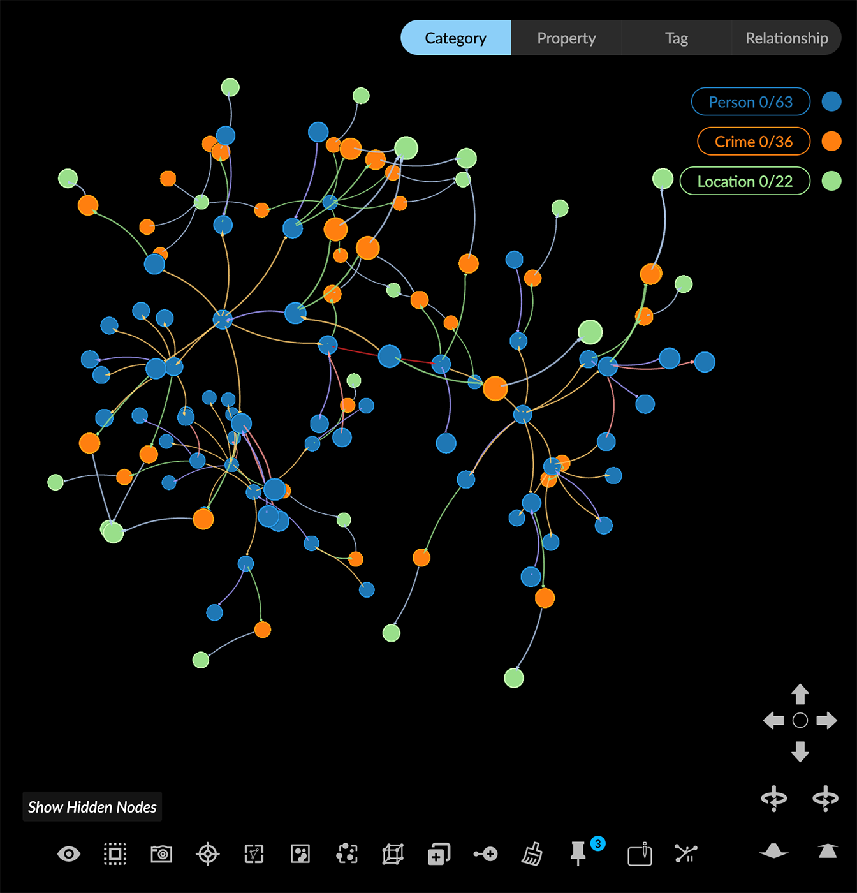 To save the subgraph, you can Tag your selection, save a view, or take another snapshot (and export your snapshot archive before you exit the project).